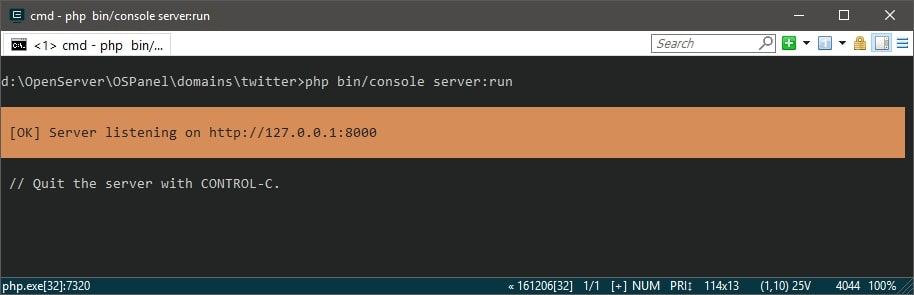
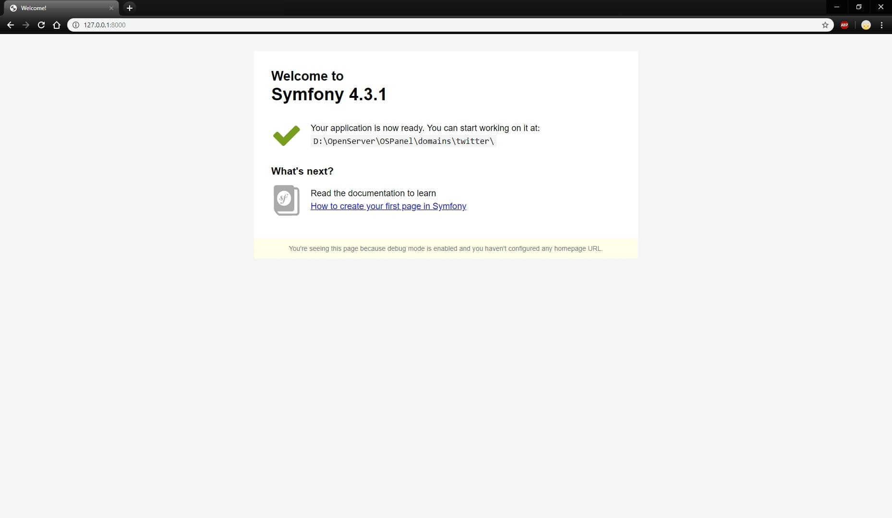
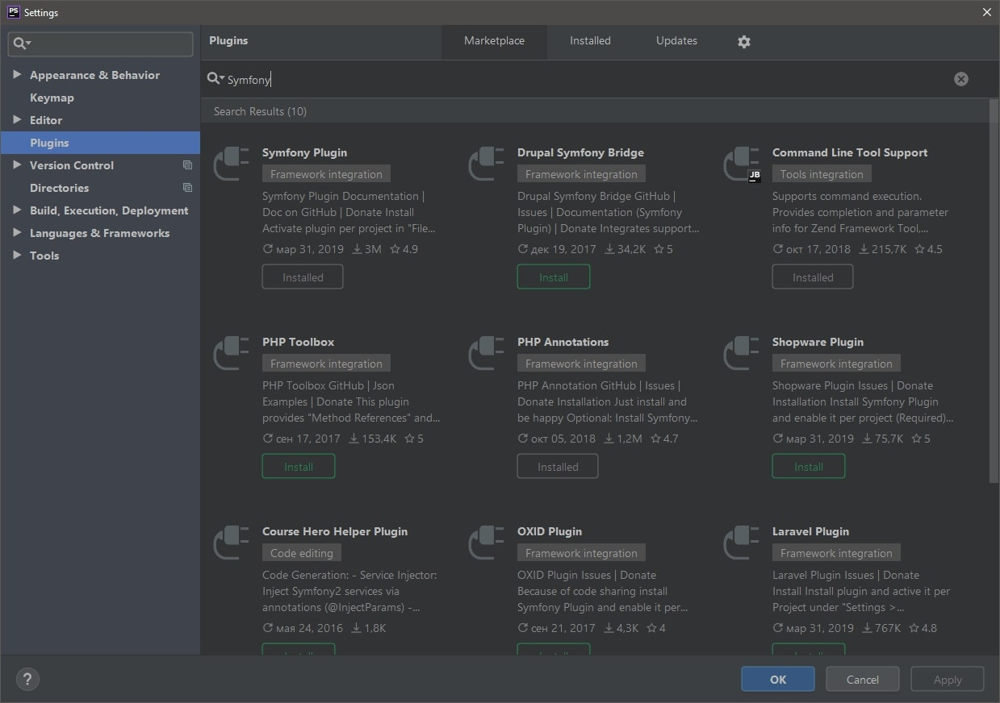
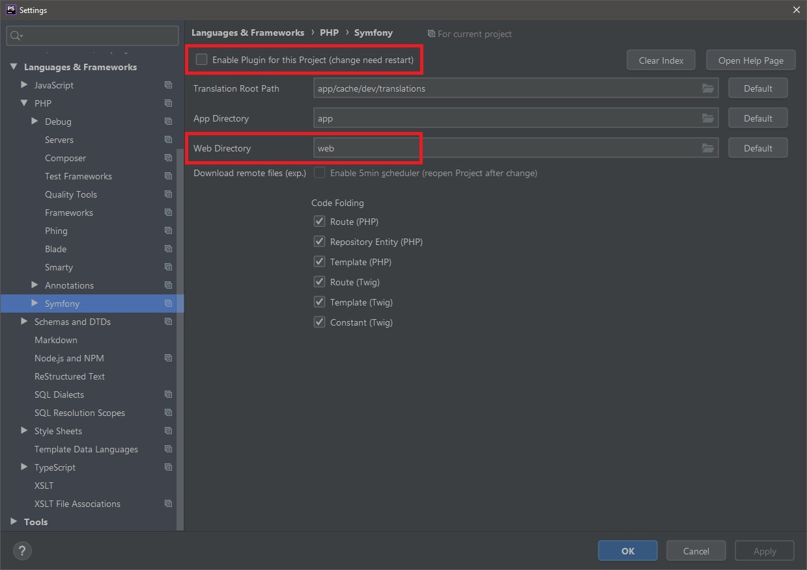

Install Symfony
Установка
Сразу перейдем к делу и введем в консоли composer create-project symfony/skeleton имя_вашего_проекта.
После продолжительной установки перейдем в папку с проектом, в моем случае - cd twitter.
Теперь развернем локальный сервер. Если вам удобнее, можете сделать это через OpenServer, XAMPP,
да хоть на хостинге, входной скрипт лежит в папке public. Мне больше нравится идея
использования рецепта веб-сервера, как бы странно это ни звучало.
В консоли напишем - composer require server.
После установки сервера нужно его запустить. Для этого существуют две команды -
php bin/console server:run и
php bin/console server:start.
Разница в том, что после запуска первой команды консоль будет вам недоступна
(хотя никто не мешает открыть второе окно), а во втором наоборот.
Поскольку мне привычнее перезапускать сервер после каких-либо обновлений, буду использовать
php bin/console server:run.
После запуска сервера ваш сайт будет расположен по адресу, который выплюнула консоль.
К слову, остановить работу сервера можно с помощью Ctrl+C.

Перейдем по указанному адресу и убедимся в работоспособности:

{kind=link}
{kind=link}
Структура папок
В процессе работы вы быстро привыкнете к тому, что где располагается, но все-таки краткое описание к знакомству обязательно.
- bin
-
Как уже можно было понять по команде
php bin/console server:runв данной папке лежат консольные скрипты. Достаточно часто мы будем вызывать отсюда maker – удобная вещь для генерации контроллеров, форм, миграций и т.д. - config
- Название говорит само за себя. Располагаются здесь конфигурационные файлы, в основном формата yaml.
- public
- Расположение входного скрипта index.php. Сюда же поместим css, js, img.
- src
- Большую часть времени мы будем проводить в текущей директории. Здесь расположение контроллеров, шаблонов, сущностей, репозиториев.
- var
- Кеш и логи.
- vendor
- Все что подключается через composer.
- .env
- Еще один конфигурационный файл. Настраивать подключение к БД, данные для mailer'а будем именно здесь.
Плагины для PhpStorm
Для работы с Symfony в PhpStorm существуют достаточно популярные и удобные плагины, которые
добавят автокомплиты, подсказки по шаблонизатору, поддержку аннотаций и многое другое.
Для установки необходимо перейти в File => Settings => Plugins
и ввести в поиске "Symfony". Вместе с "Symfony Plugin" будет так же предложено установить "annotations".

{kind=link}
После установки так же стоит поменять путь Web Directory
с web на public.
Далее включить плагины, посредством установки чекбокса, и перезапустить IDE.

{kind=link}